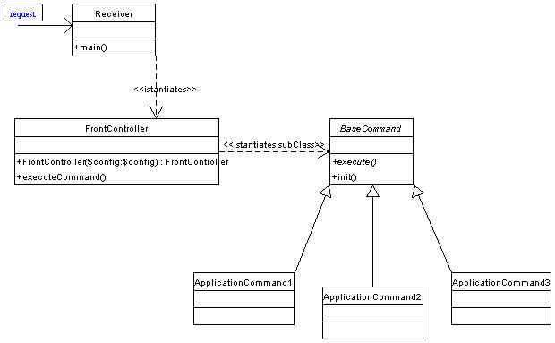
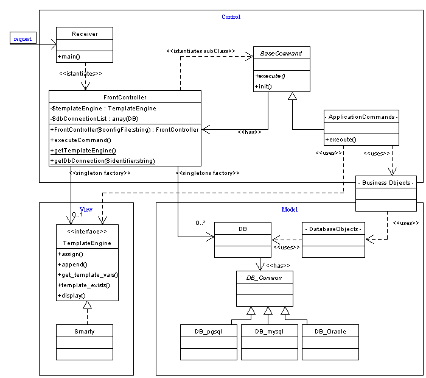

Per evitare alcune problematiche di sicurezza e consistenza legate alla stile di programmazione in PHP si vuole creare il framework completamente OO, che inviti chi lo utilizza ad adottare questo stile di programmazione.
Dall'analisi dei requisiti e del materiale consultato nella fase di benchmarking è stato deciso di porre un Front Controller Pattern (si veda: http://wact.sourceforge.net/index.php/FrontController ) alla base dell'architettura del framework.

A fronte di una richiesta HTTP, viene mandato in esecuzione
un oggetto Receiver che ha il compito di impostare l'envirorment
del linguaggio PHP, instanziare il FrontController fornendogli
i parametri di configurazione dell'applicazione e lanciare executeCommand()
per far partire l'esecuzione di un comando.
Il FrontController ha il compito di eseguire il dispatch della richiesta istanziondo
l'oggetto che esegue il comando richiesto, attenderne la risposta per mostrarne
l'output e/o eseguire altri comandi.
I comandi per poter essere invocati devono implementare la classe astratta BaseCommand
ridefinendo il metodo execute() ed opzionalmente i metodi init() e shutdown().
Il Front Controller Pattern può essere racchiuso in un'architettura Model-View-Control che fornisce anche la base per un'architettuta 3-Tier separando accesso ai dati su Database e visualizzazione tramite Template Engine (http://java.sun.com/blueprints/guidelines/designing_enterrprise_applications_j2ee/web-tier.html):

Il Front Controller viene arricchito con due Factory
Method getTemplateEngine() e getDbConnection() che creano le istanze
degli oggetti di tipo rispettivamente TemplateEngine e DB, e implementano una
sorta di "Singleton" per non replicare inutilmente
le istanze.
Il sistema del TemplateEngine è configurato in modo da poter mostrare
automaticamente diverse viste semplicemente modificando un parametro della richiesta.
/** NOTA BENE: Allo stato attuale il
TemplateEngine restituito è Smarty (non esiste in realtà la catena
di ereditarietà mostrata in figura).
I comandi tutta via devono essere costruiti rispettando l'interfaccia mostrata
nella classe astratta TemplateEngine (anche se non molto elegante nel modo in
cui definita), in questo modo nulla vieta di costruire classi Wrapper
per altri TemplateEngines (esempio: xtemplate, pear::template), oppure renderne
disponibili direttamente le interfacce rendendo i "Commands" non portabili"
*/
NOTA: Perche non utilizzare XML+XSLT per creare l'output grafico?
- al momento di inizio del progetto XML non è supportato da tutti i browser
e il supporto lato server di XML di PHP è ancora in parte sperimentale
e con performance peggiori.
- eventualemnte la soluzione attuale permette di creare un output XML da far
poi interpretare.
Al seguente link si può trovare un'analisi dei sistemi di : database abstraction
/** NOTA BENE: Allo stato attuale per l'accesso a DatabaseRelazionali si è scelto Pear::DB, nulla vieta di modificare il factory method per chi desiderasse utilizzare altri database abstraction layer. */
Per soddisfare il requisito della creazione di una Toolbox,
essendo il FrontController già in possesso delle informazioni di configurazione
dell'applicazione e già associato al BaseCommand si è scelto di
integragli questa funzionalità (si veda al riguardo l'articolo "Toolbox:
Use your singletons wisely" http://www-106.ibm.com/developerworks/webservices/library/co-single.html
).
Possono essere così creati altri factory method per poter usufruire di
istanze di oggetti configurati secondo le specifiche nel file di configurazione
come PHPMailer, NuSOAP, Kronos o qualsiasi altro componente utile all'applicazione.
La Toolbox permette in questo modo di disaccoppiare gli oggetti tra di loro,
l'unico vincolo è il legame con con il FrontController per la configurazione.
Viste le carenze del linguaggio e la cripticità delle documentazioni
di altri componenti per l'ErrorHandling si è deciso di crearsi una nuova
classe Error disponibile anche per i comandi.
Il sistema permette di creare delle categorie di errori, e definire delle funzioni
callback per la loro gestione.
Si è scelto di privilegiare la semplicità d'uso e il basso overhead
della gestione degli errori http://www.eng.mu.edu/corlissg/229.S02/n_error_handling.html
Il framework utilizza una propria categoria di errori _ERROR_CRITICAL il cui handler deve interrompere sempre e comunque l'esecuzione, deve essere permesso all'applicazione definire nuove categorie con i rispettivi handler.
Necessaria per mantenere persistenza di informazioni rilevanti su disco.
Puo essere a sua volta riutilizzata dagli handler degli errori per salvare le
informazioni riguardanti le situazioni di errore.
Deve poter essere estesa ed utilizzata dall'applicazione per definire eventuali
altri log.
Un framework con comandi astratti è difficilmente testabile.
Risultano inoltre difficilmente testabili le applicazioni web in PHP a causa
della loro struttura in cui le richieste HTTP non sono oggetti riproducibili
(è impossibile creare degli oggetti ) ma elementi nativi del linguaggio.
In proposito si è pensato di costruire un oggetto wrapper per simulare
le richieste web da usare anche come mock object, ma ciò avrebbe comportato
uno snaturamento del linguaggio e una maggiore difficoltà nel non poter
trattare gli elementi nativi (gli array superglobal $_GET, $_POST, $_SESSION)
di PHP che risultano di enorme comodità.
Per migliorare le possibilità di testing può essere utile per il progettista delle applicazioni spostare la maggiorparte delle funzionalità dai comandi del framework sugli oggetti del dominio dell'applicazione ciò però comporta in generale un degrado delle prestazioni.
Si è scelto di integrare nativamente pear::PhpUnit all'interno di un comando applicativo "UnitTest", questo comando può essere disattivato da configurazione, ma risulta utile per ricreare l'ambiente dell'applicazione creato dal framework al momento del testing.
Si possono leggere i seguenti articoli riguardo il testing con PHPUnit, insieme
al framework viene fornito un esempio.
http://agilemovement.it/modules.php?op=modload&name=News&file=article&sid=344&mode=thread&order=0&thold=0